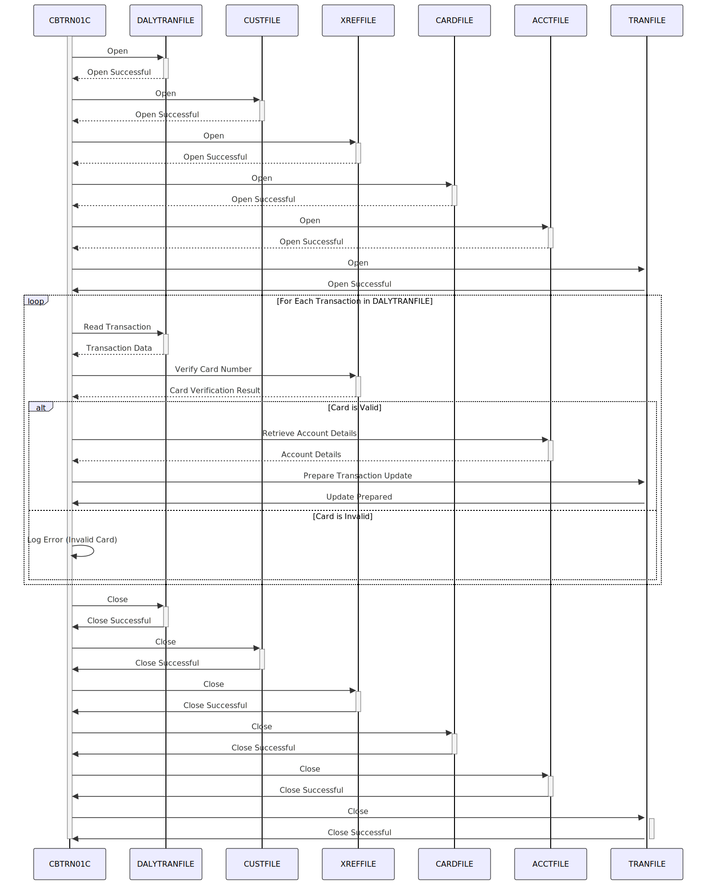

Gerado em: 1º de outubro de 2024
Título do Documento: CardDemo - Processamento Diário de Transações - Especificação do Programa
Descrição Resumida: Este programa processa transações diárias de cartão de crédito a partir de um arquivo, verifica os detalhes do cartão em um arquivo de referência cruzada, recupera informações da conta e se prepara para atualizar os registros de transações. Ele garante que as transações estejam vinculadas a contas válidas e se prepara para atualizar os registros de transações no sistema.
Histórias do Usuário: Como um analista de operações financeiras, preciso que o sistema processe automaticamente as transações diárias de cartão de crédito para garantir atualizações precisas e oportunas nas contas do cliente e nos registros de transações.
Épico Relacionado: 4 - Processamento de Transações
Requisitos Técnicos:
Processamento de Arquivo:
DALYTRAN-FILE).CUSTOMER-FILE), referência cruzada de contas de cartão (XREF-FILE), detalhes do cartão (CARD-FILE), detalhes da conta (ACCOUNT-FILE) e transações (TRANSACT-FILE).Verificação de Cartão:
DALYTRAN-CARD-NUM) é validado em relação ao XREF-FILE.Recuperação de Conta:
XREF-ACCT-ID) será recuperado do XREF-FILE.ACCOUNT-FILE.Preparação para Atualização de Transação:
TRANSACT-FILE, embora a lógica exata de atualização não seja fornecida no trecho de código atual.Tratamento de Erros:
Validação de Dados:
XREF-FILE para garantir que sejam válidos e ativos.ACCOUNT-FILE para garantir que existam.Regras de Negócio:
Considerações de Desempenho:
Considerações de Segurança:
Modelos Relacionados
DALYTRAN-RECORD: Representa um único registro de transação lido do arquivo de transação diário.
DALYTRAN-CARD-NUM String: O número do cartão de crédito usado na transação.DALYTRAN-ID String: O ID da transação.CARD-XREF-RECORD: Representa um registro no arquivo de referência cruzada da conta do cartão.
XREF-CARD-NUM String: O número do cartão de crédito usado como chave.XREF-ACCT-ID String: O ID da conta vinculado ao número do cartão.XREF-CUST-ID String: O ID do cliente vinculado ao número do cartão.ACCOUNT-RECORD: Representa um registro no arquivo da conta.
ACCT-ID String: O ID da conta usado como chave.Configurações:
DALYTRAN: O caminho do arquivo para o arquivo de transação diário.CUSTFILE: O caminho do arquivo para o arquivo do cliente.XREFFILE: O caminho do arquivo para o arquivo de referência cruzada da conta do cartão.CARDFILE: O caminho do arquivo para o arquivo de informações do cartão.ACCTFILE: O caminho do arquivo para o arquivo de informações da conta.TRANFILE: O caminho do arquivo para o arquivo de registros de transações.Melhorias de Código:
Melhorias de Segurança:
Diagrama Conceitual:
–Made by “Smart Engineering” (by Compass.UOL)–